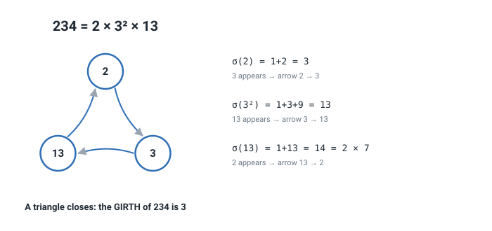
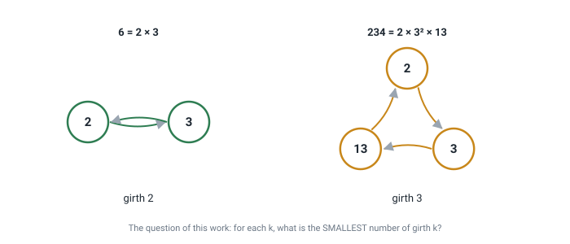
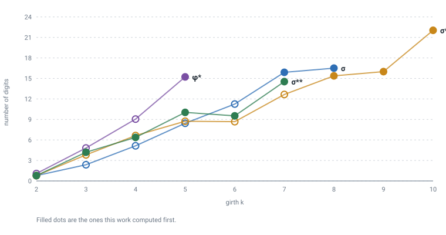
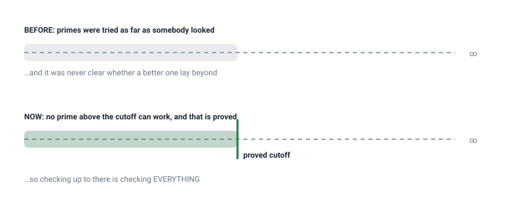

Explained from scratch · no background needed
What the girth of a number is, where the nineteen values in this work came from, how they were checked and what they are good for. If you can divide and you remember what a prime number is, that is enough.
We are going to draw a picture out of a number. It sounds odd, but it is simple: the dots of the picture are its primes, and the arrows come out of one calculation.
Take 234. First break it into primes:
234 = 2 × 3² × 13. The dots will be 2, 3 and 13.
Now, for each prime, compute the sum of the divisors of its power. It is schoolbook arithmetic:
And the rule for the arrows is: from each prime, draw an arrow to every
prime appearing in its result. From 2 an arrow goes to 3, because 3 showed
up. From 3, one to 13. And from 13, one back to 2, because
14 = 2 × 7 has a 2 in it.
The three arrows close a triangle: 2 → 3 → 13 → 2. A path that
returns to where it started is called a cycle, and here its length is 3.
The length of the shortest cycle in a picture is called its girth.
The question of this work: for each length
k, what is the smallest number of all whose picture has a
cycle of length k?
For k = 3 the answer is 234: no smaller number has a
triangle. This work answers that question in
52 cases, using eleven different
calculations in place of the sum of divisors.
12 ÷ 3 comes out exact, no remainder.
Written 3 | 12.234 = 2 × 3² × 13. Every number breaks up in exactly one way.n, itself included.
σ(6) = 1+2+3+6 = 12. It is one of the oldest calculations in
mathematics: perfect numbers are defined with it.n, without repeats.
rad(234) = 2 × 3 × 13 = 78.
One detail matters: the picture only makes sense when every prime has at least one arrow arriving at it. The numbers where that happens are called, for the sum of divisors, prime-abundant, and they are not an invention of this work: Pollack and Pomerance studied them in 2012 and they are catalogued in the OEIS encyclopedia. What is computed here is a property of the drawing of those numbers, which is a different thing.

Draw 6. Hint: 6 = 2 × 3, so there are two dots. Compute
σ(2) and σ(3) and see which primes appear.
Answer: σ(2) = 3, so an arrow 2 → 3. And
σ(3) = 1+3 = 4 = 2², so an arrow 3 → 2. The two
arrows close a cycle of length 2: the girth of 6 is 2. And no smaller
number closes at all, so 6 is the answer for k = 2.
Nobody gave an opinion here. Each of the nineteen numbers came out of a program, and there are two different programs that share no method:
In an earlier version the constructor proposed n = 120 as the
smallest of girth 3 — and the real girth of 120 is 2. Constructing is not
verifying: every candidate produced by a method has to be checked by an
independent measurement.
For four different calculations — the sum of divisors and three relatives of it — and for each girth, the smallest number. 38 of them had never been computed before.

This is what turns a list into a result. The previous version of this work said, honestly, that its values were "minimal among the primes examined" — meaning that if somebody looked further, a better one might appear. That is a conjecture, not a theorem.
What closes that door is a short argument. If a number is the smallest of its girth, its largest prime cannot be arbitrary: the prime pointing at it on the cycle must contribute a value containing it, and that forces the whole number to be at least as large as a certain product. Given any already known example, that bounds the largest possible prime. And checking every prime below a bound is checking all of them.

The cutoff above has a catch: it is stated in terms of an example already known. If nobody ever exhibited a number of some girth, there is nothing to start from, and the previous version said exactly that — that there the search was "still a heuristic search".
That turned out to be false, and the interesting part is that the previous version already had the material to notice. By doubling a bound and searching exhaustively below it, the search needs no seed at all. That produced the first value that could not have been computed before: girth 9 for one of the three functions, which had no known example of its kind.
You would expect that asking for a longer cycle costs more, and it usually does. But twice in the table the number of the next girth is smaller than the one before. Why?
Look at the picture as a ring of beads. To make the ring one bead longer you slip a new bead in between two old ones. The new bead costs something — it is a new prime — but the bead it now sits behind may get cheaper, because it no longer has to reach all the way to the next one; a shorter reach means a smaller power. If the saving beats the cost, the longer ring is the cheaper one.
That is the whole idea, and it can be checked without finding the next number at all. Everything the check needs is in the ring you already have: for each join, the powers below the one already there, and the primes that divide the value at that power. Both lists are short and finite. If one insertion comes out cheaper than what it replaces, then the next number is smaller — proved, without searching for it.
It works: over every pair of consecutive girths in the table, the check says "smaller" exactly twice, which is exactly the two times it happens — and in both it hands you the next number itself, on the nose.
There is a bonus, and it is how two of the new values were computed. Even when the insertion is not cheaper, it still hands you a real number of the next girth — and a number in hand is exactly what the search of section 6b needs to start, which saves it all the guessing. It was run both ways to see how much that is worth: starting from nothing took 1125 seconds, starting from the number the insertion hands you took 252. It buys speed, not possibility: the search gets there either way.
Because anyone can run one command and watch. The repository ships a program running 414 checks in a few seconds, with nothing to install.
| It does not say | Why |
|---|---|
| That the family of numbers is new | It is not: for the sum of divisors they are the prime-abundant numbers of Pollack and Pomerance (2012), catalogued as A175200. What is new is the invariant of the drawing. |
| That there are values for every girth | The table goes as far as the computation went. Empty cells are empty cells, not zeros. |
| Anything about numbers outside this family | If some prime has no arrow arriving, the number is out and nothing is claimed about it. |
| That the method is the fastest possible | It was measured to be several times faster than the previous one, and that is all that is claimed. |
| That when the check finds no cheaper insertion, the next number is bigger | The check only works in one direction. When it finds one, the next number really is smaller. When it finds none, the next number could still be smaller for a reason that has nothing to do with this ring — that never happened in the table, but "never happened" is a measurement, not a proof. |
| Word | What it means | Example |
|---|---|---|
| Prime | Only 1 and itself divide it | 2, 3, 5, 7 |
| Factoring | Breaking into a product of primes | 234 = 2·3²·13 |
| σ(n) | The sum of all divisors | σ(6) = 12 |
| rad(n) | The product of the distinct primes | rad(234) = 78 |
| Directed graph | Dots joined by arrows | 2 → 3 |
| Cycle | A path of arrows returning to the start | 2→3→13→2 |
| Girth | The length of the shortest cycle | girth(234) = 3 |
| Witness | A number exhibiting a given girth | 234 for k=3 |